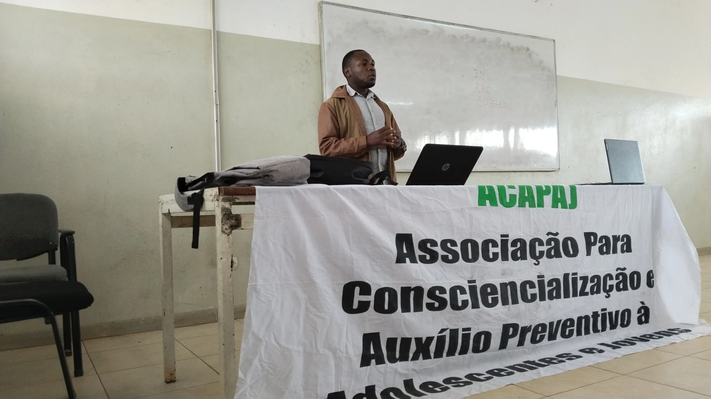
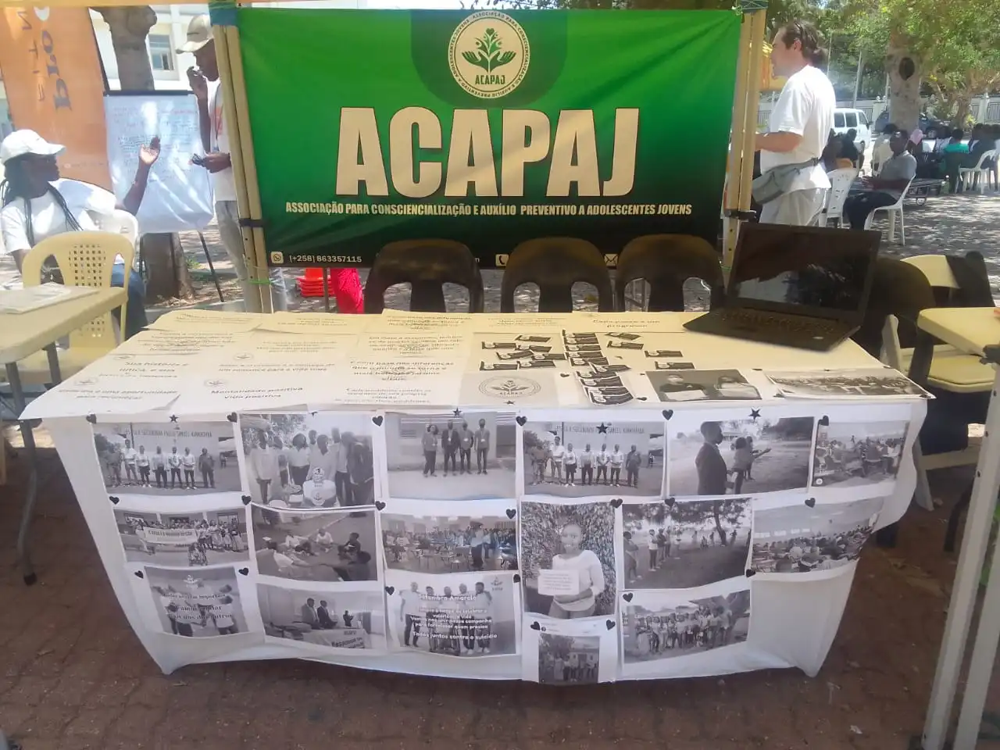

Caminhada Amarela
"Caminhar, Ouvir e Apoiar"
Uma manhã de consciencialização e movimento colectivo pelas ruas de Maputo, integrada nas celebrações do Setembro Amarelo — movimento internacional de sensibilização para a prevenção do suicídio e promoção da saúde mental.
Caminhada Amarela

.webp)
.webp)



Como vai funcionar a manhã
Caminhada
Partida da Av. do Trabalho, junto à Universidade Pedagógica de Maputo, percorrendo o centro da cidade até ao Jardim Tunduru.
Ginástica e palestra de sensibilização
No Jardim Tunduru: momentos de reflexão, sessão de informação sobre saúde mental e interacção entre parceiros e participantes.
De Lhanguene ao Jardim Tunduru
O trajecto atravessa algumas das principais avenidas de Maputo. Junte-se à caminhada em qualquer ponto do percurso ou acompanhe desde o início, na Universidade Pedagógica.
- 1Av. do Trabalho Partida
- 2Rua 2019
- 3Av. 24 de Julho
- 4Av. Karl Marx
- 5Av. Ho Chi Min
- 6Rua Municipal Oeste
- 7Av. Samora Machel
- 8Jardim Tunduru Chegada
Toque para abrir o trajecto completo
Porque esta causa importa
Setembro Amarelo é o movimento internacional de sensibilização para a prevenção do suicídio e promoção da saúde mental. A Caminhada Amarela é a forma da ACAPAJ levar esta conversa para as ruas de Maputo, envolvendo adolescentes, jovens, famílias e parceiros num só momento de consciencialização colectiva.
Cada inscrição, cada partilha e cada parceria ajuda a alargar o alcance desta mensagem a mais pessoas que precisam de ouvir que não estão sós.
"Cada passo pode ser uma mensagem de esperança. Cada parceria pode ajudar a salvar vidas."
Quero participar na Caminhada
Deixe os seus dados e a equipa da ACAPAJ entra em contacto com todas as informações para o dia 12 de Setembro.
Torne-se Parceiro da Caminhada Amarela
Associe a sua marca a uma causa que salva vidas e fortaleça a sua responsabilidade social corporativa junto da comunidade de Maputo.
- Demonstrar compromisso com a saúde mental e o bem-estar da comunidade
- Reforçar a política de responsabilidade social corporativa
- Associar a marca a uma causa social relevante
- Promover uma cultura de prevenção, inclusão e valorização da vida
- Fortalecer a visibilidade junto da comunidade